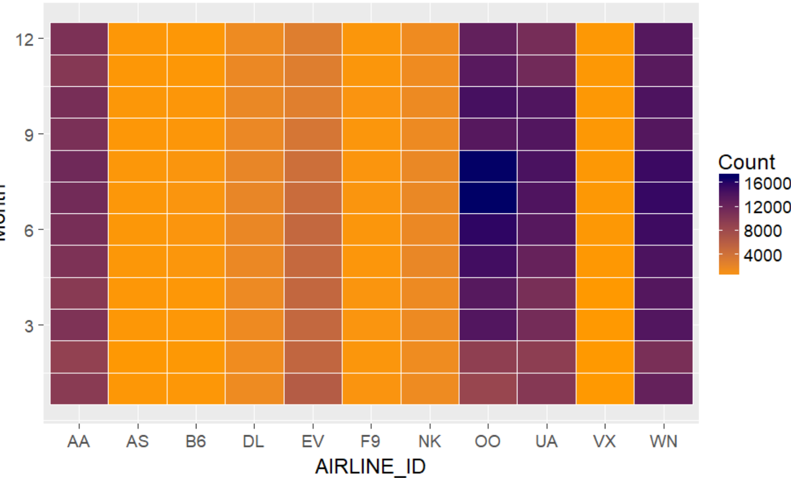

Guillermo Rojas Hernandez progress: This week I focused on customizing the base template for the main Learning to Fly web page, and creating the base Shiny script and first visualizations for the Shiny application for Project 2.
Yang Hao progress: This week I focused on working with the data set using R. An overview of my work is in this webpage
Natasha Rice progress: This week I focused on downloading the data, cleaning up the data set, setting up the project on GitHub, and doing some of the initial R work on the dataset.
Siddharth Basu progress: This week I focused on learning more about the Shiny dashboard, coming up with ideas for the dashboard visualization, and doing some R work on the dataset.
Guillermo Rojas Hernandez progress: This week I set up the first draft of our application on the classroom Shiny server, and I also tested the application on the large class display. In addition, I created the initial table that displayed the top 15 arrivals and departures from Midway. I also created drafts of the Shiny Dashboard that fulfill the requirements from sections C to A, and updated the website describing our progress.
Yang Hao progress: This week I
Natasha Rice progress: This week I created the required bar charts for the section C requirements. I also selected a color palatte for consistency among the charts.
Siddharth Basu progress: This week I focused on helping create drafts of the Shiny dashboard and on sketching different ways to graph the data.
Guillermo Rojas Hernandez progress:
Yang Hao progress:
Natasha Rice progress: This week I modified the R-files read in process to optimize read in speeds, optimizing start time from 25 seconds to 10 seconds. I also created heat maps for part B. Picture below is Airline Arrivals from Airports
Siddharth Basu progress: This week I focused on the UI aspect with coming up minimizing data visualizaion by scalability. Currently working on section A: Interesting Days, in which I set up the tab and looking at the data for spikes and dips. I also became co-admin with Guillermo to manage the project website.
Guillermo Rojas Hernandez progress:
Yang Hao progress:
Natasha Rice progress:
Siddharth Basu progress:
The data utilized was chosen by the professor of the course, Dr. Andy Johnson.
For the application, we created bar charts and pie charts using the ggplot library once the data was processed into R Studio.
Steps to follow:
The data utilized was chosen by the professor of the course, Dr. Andy Johnson.
For the application, we created bar charts and pie charts using the ggplot library once the data was processed into R Studio.
Steps to follow: